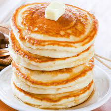

Pancake Recipe

Today we are going to be making the fluffies pancakes you have ever tried!
This recipe is for those of you out there who dont think you can cook.
We will just be modifying store bought pancake mix in order to make these award winning panckes!
- Extra fluffy pancake mix
- Brown sugar
- Cinnamon
- Almond Milk
- In a bowl add 2 cups of pancake mix, 3 tablespoons of brown sugar, 1/4 cup of almond milk and a half of a tablespoon of cinnamon
- Heat a pan to medium heat and pour on 1/4 cup of batter per pancake slipping once bubbles start popping on the surface of the batter
- Take off pan once the pancake bounces back from being poked and Enjoy!